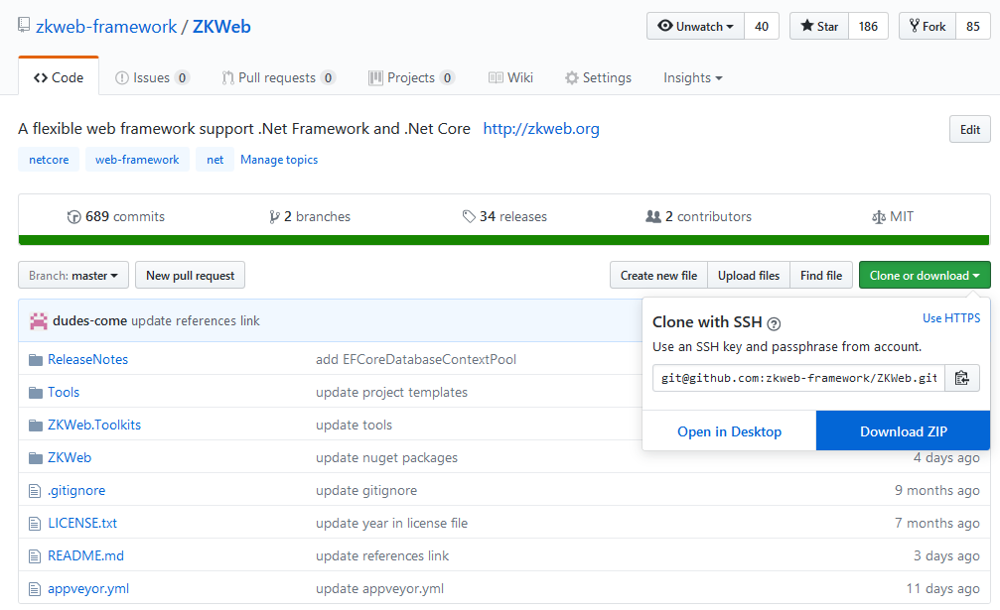
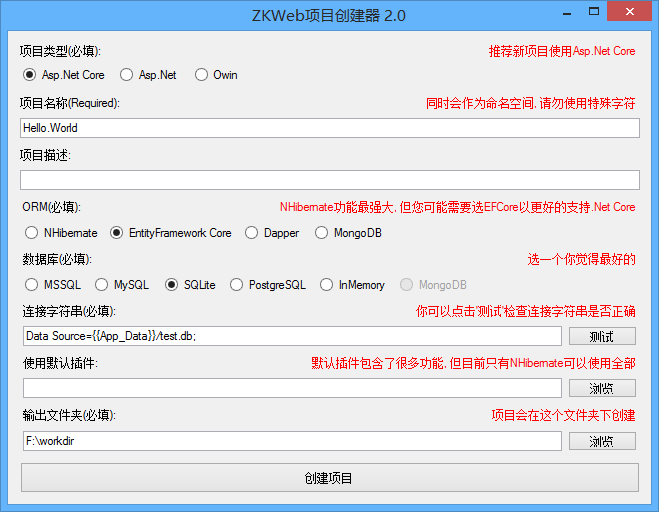
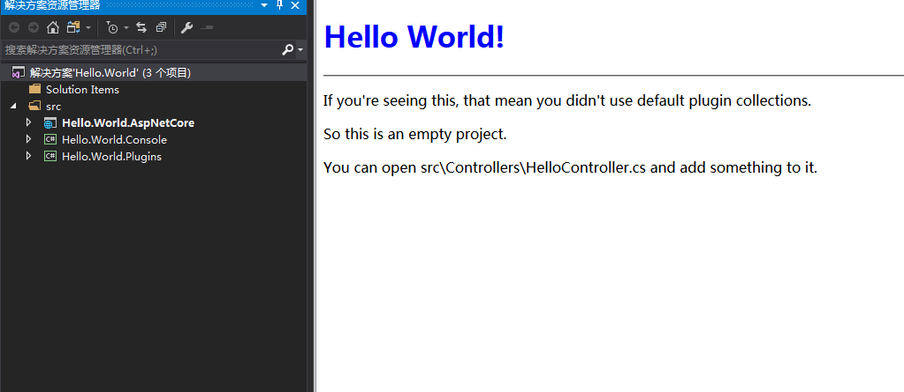

创建空白项目
如果您想从头熟悉ZKWeb, 或者不想使用预先写好的插件, 可以创建一个空白项目.
空白项目只包含一个控制器和一个静态资源的处理器.
下载ZKWeb
首先打开ZKWeb的项目地址, 然后点击下图的按钮下载到本地.

使用项目创建器创建项目
打开ZKWeb\Tools\ProjectCreator.Gui.Windows\ZKWeb.Toolkits.ProjectCreator.Gui.exe,
可以看到下面的界面.

推荐选择 Asp.Net Core + EntityFramework Core + SQLite, 这样创建好项目马上就可以打开.
再选择输出文件夹后点击"创建项目"即可.
运行项目
打开项目运行后可以看到以下的界面:

空白项目的结构
打开项目以后我们可以看到里面有AspNetCore, Console, Plugins三个项目,
项目名称.AspNetCore项目: 仅用于启动网站, 里面不会放任何业务代码.
项目名称.Console项目: 用于运行单元和集成测试, 或运行一些临时的代码片段.
项目名称.Plugins项目: 用于保存插件, 一个文件夹代表一个插件, 业务处理都会写到这个项目下面.
空白项目包含的控制器
空白项目包含了一个HelloController,
这个控制器是在Plugin中手动注册的, 注册的前提是当前未引用名字叫Common.Base的插件.
另外还包含一个HelloStaticHandler,
这个处理器用于返回静态文件的内容, 注册的前提跟上面一样.
这两个组件都是手动注册的,
如果您想让它们自动注册可以删掉Plugin中的内容, 并在这两个class上标记[ExportMany].
例如
[ExportMany] public class HelloController : IController { /* 原有的内容 */ }
当您想添加其他控制器的时候也可以这样添加, 只需要在上面标记[ExportMany]就可以自动注册.
了解更多
如果您已经成功创建和运行了空白项目, 您可以继续:
更多的内容可以查看左边的"核心文档".